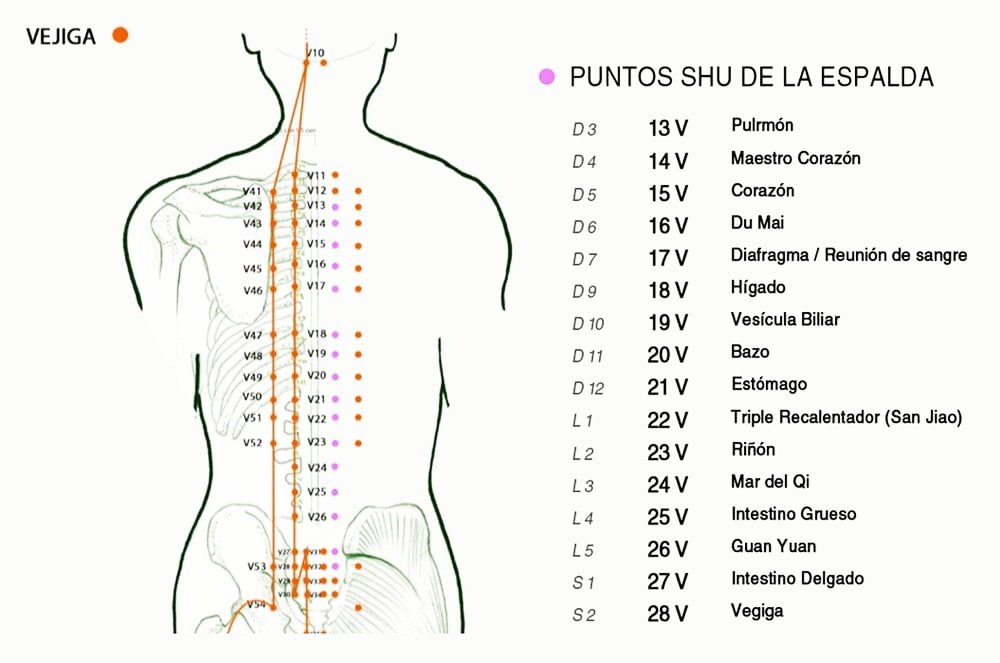
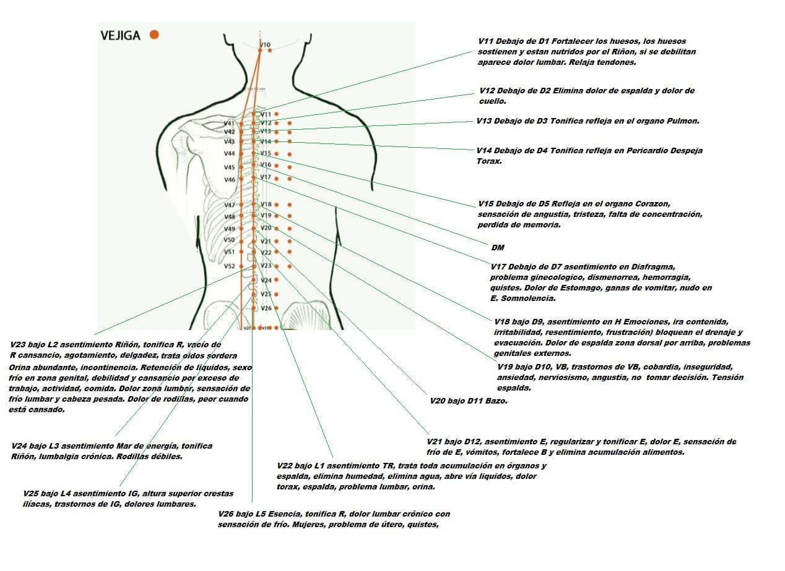

Espacio INYO — Guía de Estudio Anma & Shiatsu
Puntos Shu de la Espalda (背俞穴)
Lámina 1: Cartografía Anatómica y Canal de Vejiga (Líneas 1 y 2)
膀胱経
Página 1 / 4 (Hoja 1 - Frente)

Espacio INYO — Guía de Estudio Anma & Shiatsu
Vertebración y Localización de Puntos Shu
Referencia Sistemática del Canal de Vejiga a 1,5 cun de la Línea Media
位置表
Página 2 / 4 (Hoja 1 - Dorso)
Concepto Teórico: Puntos Shu / Yu (背俞穴)
Los Puntos Shu de la espalda son centros de transporte de energía ubicados en la primera línea del Canal de Vejiga. Cada punto corresponde directamente a un órgano o víscera (Zāng-Fǔ) y refleja su estado funcional tanto para diagnóstico palpatorio como para tratamiento terapéutico.
| Vértebra | Punto | Órgano / Resonador Asociado |
|---|---|---|
| D 3 (Dorsal 3) | 13 V | Pulmón (Fei Shu) |
| D 4 (Dorsal 4) | 14 V | Pericardio / Maestro Corazón (Jue Yin Shu) |
| D 5 (Dorsal 5) | 15 V | Corazón (Xin Shu) |
| D 6 (Dorsal 6) | 16 V | Du Mai (Du Shu) |
| D 7 (Dorsal 7) | 17 V | Diafragma / Reunión de Sangre (Ge Shu) |
| D 9 (Dorsal 9) | 18 V | Hígado (Gan Shu) |
| D 10 (Dorsal 10) | 19 V | Vesícula Biliar (Dan Shu) |
| D 11 (Dorsal 11) | 20 V | Bazo (Pi Shu) |
| D 12 (Dorsal 12) | 21 V | Estómago (Wei Shu) |
| L 1 (Lumbar 1) | 22 V | Triple Recalentador (San Jiao Shu) |
| L 2 (Lumbar 2) | 23 V | Riñón (Shen Shu) |
| L 3 (Lumbar 3) | 24 V | Mar del Qi (Qi Hai Shu) |
| L 4 (Lumbar 4) | 25 V | Intestino Grueso (Da Chang Shu) |
| L 5 (Lumbar 5) | 26 V | Guan Yuan (Guan Yuan Shu) |
| S 1 (Sacro 1) | 27 V | Intestino Delgado (Xiao Chang Shu) |
| S 2 (Sacro 2) | 28 V | Vejiga (Pang Guang Shu) |
📍 Guía de Localización Anatómica y Puntos Referenciales:
- • C7 (Cervical 7): Apófisis espinosa prominente al flexionar cuello.
- • D3 (13 V): Nivel del ángulo superior / espina de escápula.
- • D7 (17 V): Nivel del ángulo inferior de la escápula.
- • L4 (25 V): Línea horizontal que une crestas ilíacas superiores.
Espacio INYO — Guía de Estudio Anma & Shiatsu
Indicaciones Terapéuticas y Afecciones
Lámina 2: Sintomatología Física, Visceral y Manifestaciones Psicoemocionales
主治症
Página 3 / 4 (Hoja 2 - Frente)

Espacio INYO — Guía de Estudio Anma & Shiatsu
Fichero Clínico & Esfera Psicoemocional
Desglose Terapéutico por Regiones de la Espalda y Aspectos del Shen
精神・病症
Página 4 / 4 (Hoja 2 - Dorso)
1. Región Torácica Alta (V11 - V15) — Sistema Respiratorio & Shen
- • V11 (Debajo de D1): Fortalece huesos (nutridos por Riñón), trata dolor de espalda alta y lumbar. Relaja tendones.
- • V12 (Debajo de D2): Elimina dolor de espalda alta, trapecios y rigidez de cuello. Punto clave para Viento.
- • V13 (Debajo de D3 - Fei Shu): Tonifica refleja en órgano Pulmón. Asentamiento del alma corpórea (Po). Asma y tos.
- • V14 (Debajo de D4 - Jue Yin Shu): Tonifica refleja en Pericardio. Despeja el tórax y alivia opresión pectoral.
- • V15 (Debajo de D5 - Xin Shu): Asentamiento del Corazón (Shen). Trata angustia, tristeza, concentración e insomnio.
2. Región Dorsal Media (V17 - V21) — Digestivo & Emociones (Hun / Yi)
- • V17 (Debajo de D7 - Ge Shu): Asentamiento de Diafragma y Sangre. Dismenorrea, opresión gástrica, somnolencia.
- • V18 (Debajo de D9 - Gan Shu): Asentamiento de Hígado (Hun). Trata ira contenida, irritabilidad, frustración y resentimiento.
- • V19 (Debajo de D10 - Dan Shu): Asentamiento de Vesícula Biliar. Cobardía, inseguridad, angustia y tomar decisiones.
- • V20 (Debajo de D11 - Pi Shu): Asentamiento de Bazo (Yi). Obsesión, rumiación mental, digestión lenta y cansancio.
- • V21 (Debajo de D12 - Wei Shu): Asentamiento de Estómago. Regulariza E, elimina dolor gástrico, vómitos y acumulación.
3. Región Lumbo-Sacra (V22 - V26) — Esencia (Jing) & Voluntad (Zhi)
- • V22 (Debajo de L1 - San Jiao Shu): Triple Recalentador. Acumulación en órganos y espalda, abre vía de líquidos.
- • V23 (Debajo de L2 - Shen Shu): Asentamiento de Riñón (Zhi). Vacío de Riñón, agotamiento, tinnitus, incontinencia, dolor rodillas.
- • V24 (Debajo de L3 - Qi Hai Shu): Asentamiento del Mar del Qi. Tonifica Riñón, lumbalgia crónica y piernas débiles.
- • V25 (Debajo de L4 - Da Chang Shu): Asentamiento de Intestino Grueso (altura crestas ilíacas). Trastornos de IG y lumbalgia.
- • V26 (Debajo de L5 - Guan Yuan Shu): Punto de la Esencia (Jing). Tonifica R, lumbalgia con frío, problemas de útero/quistes.